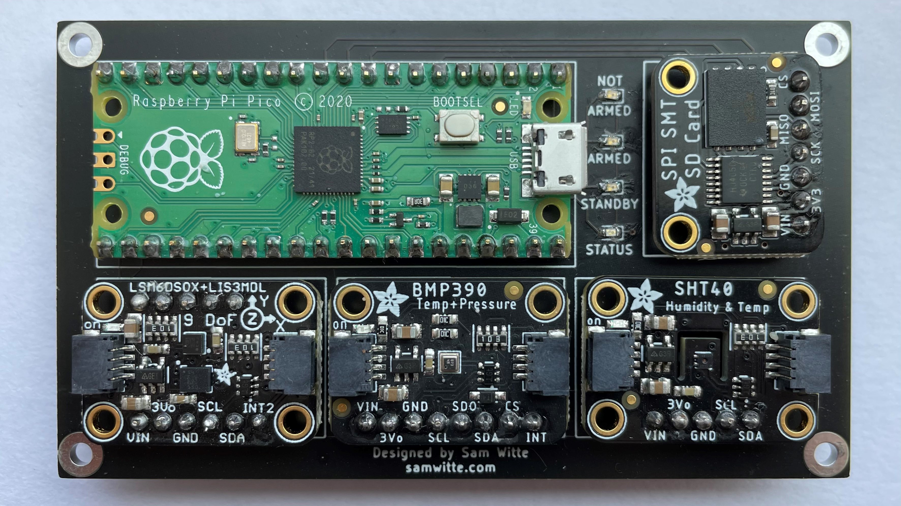
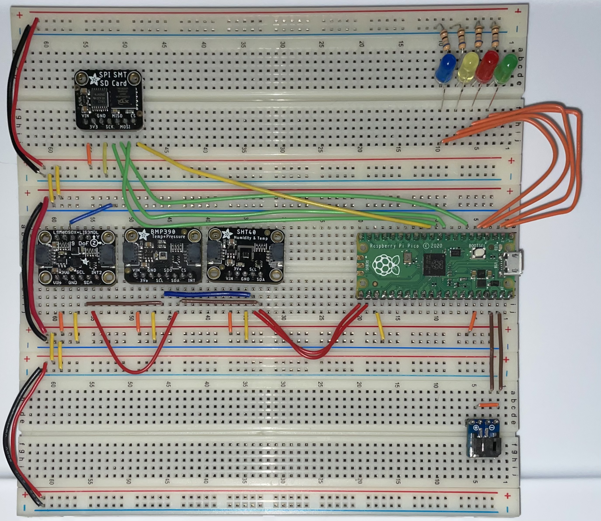
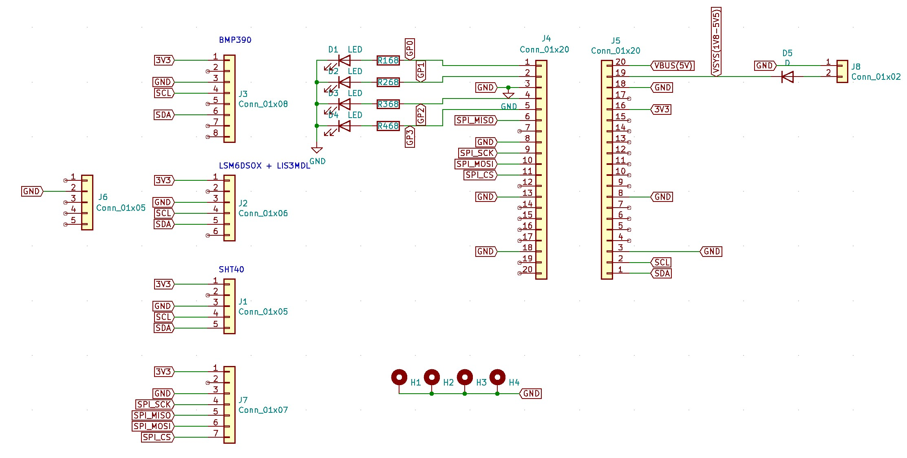
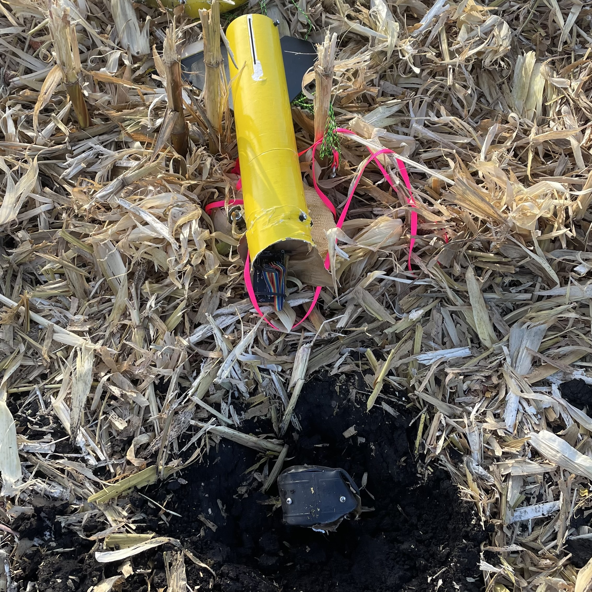
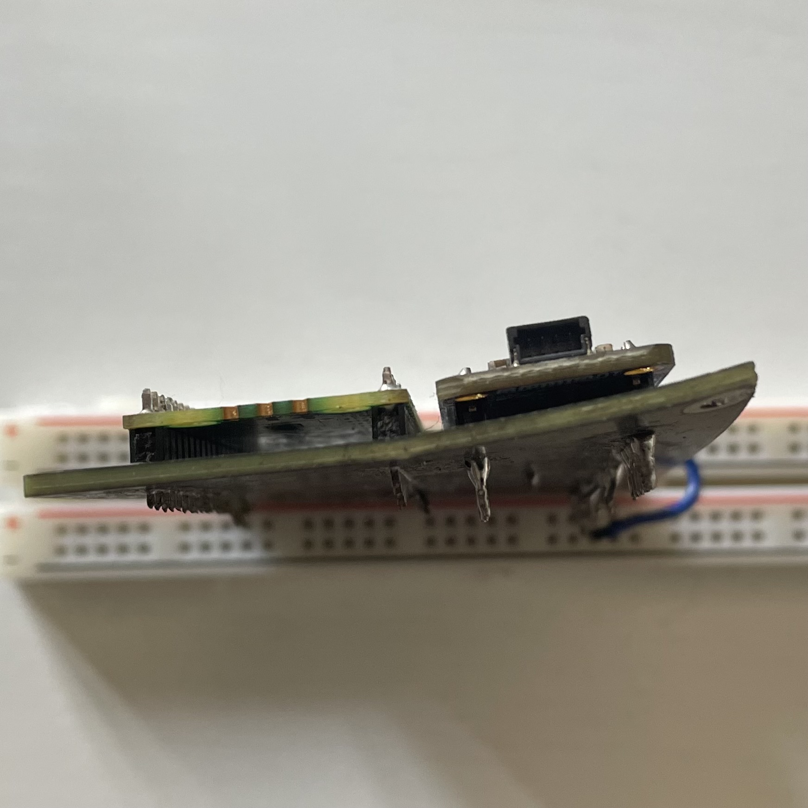
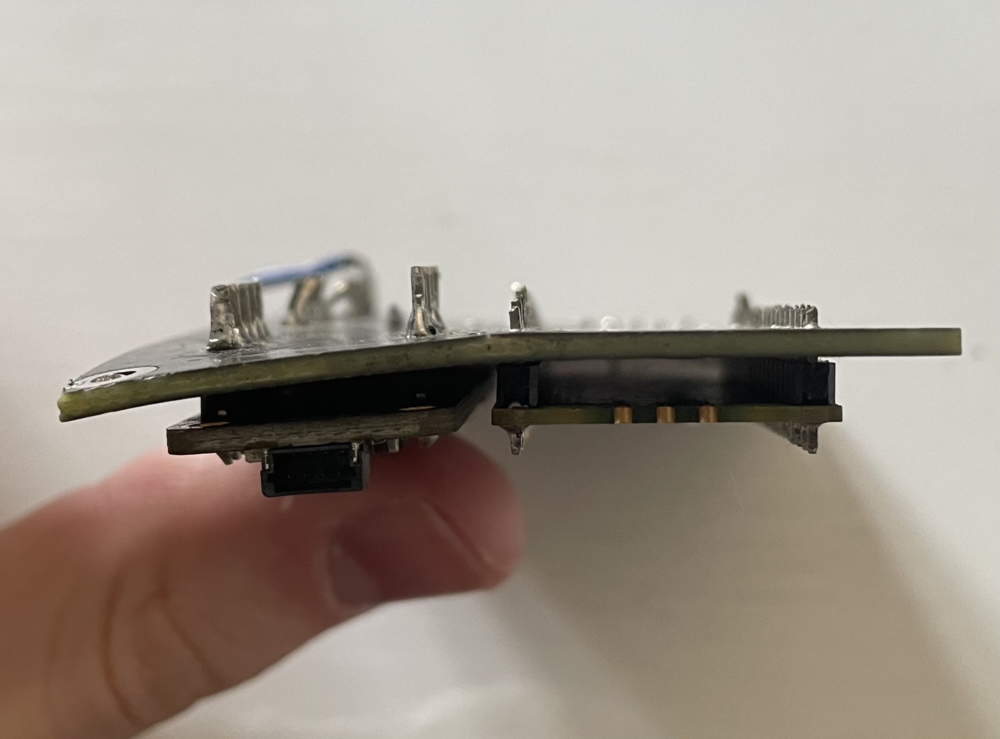
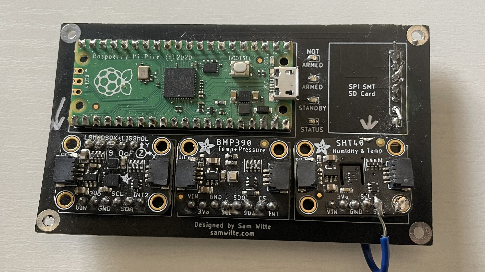

Portfolio / Personal projects
HPR flight computer (v1)
A PCB designed to allow various Adafruit breakout boards to communicate with a Raspberry Pi Pico during HPR model rocket launches.
Last updated
Throughout this project, I learned more about interfaces such as I²C and SPI. I also improved my PCB layout skills and EDA software familiarity.

Initial Circuit Design
When first designing this circuit, I started with a list of goals for the project. I knew I wanted one or more sensors to collect data during an HPR (high-powered rocketry) model rocket launch, so I began researching parts.
I found all of the sensors used in this project in the form of breakout boards from Adafruit, which are pre-assembled PCBs with the sensors and supporting circuitry on them, with easy-to-access pins.

PCB Layout and Design
For the PCB design and layout, I used KiCAD. I chose this program because I was already familiar with it, unlike other programs like Autodesk Eagle.
The schematic was simple: various pins from each breakout board were connected, along with some LED circuitry. I decided to use small 0603 components out of curiosity to see how difficult they would be to solder by hand (spoiler: it's pretty tough).

Choosing Parts and Ordering the PCBs
All the components were purchased from Digikey. If you're interested in the exact parts used, there's a list in the GitHub repository for this project.
The PCBs were ordered through JLCPCB, which had a very quick turnaround, and the PCBs arrived just as I designed them.
Final Thoughts
I learned a lot from this project. I brushed up on my Python skills, used three I²C devices on a single bus, and created a final product that I'm proud of.
One of the first issues I noticed after assembly was that the micro-USB port on the Pi Pico, used to extract flight data, was inaccessible due to clearance issues.
While I consider this project a success, there's definitely room for improvement, and version 2 is already in development.
Update: The Motor Failed
I finally launched a rocket with the flight computer inside, but unfortunately, the motor failed about halfway through its burn!
In one of the pictures, you can see the flight computer inside the rocket, with the ~10-inch nosecone almost entirely buried in the ground.




While this crash was unfortunate and a bit disappointing, it provides the perfect opportunity to build a second version with improvements.
Version 2 was designed but never manufactured, and version 3 is currently in development, planned to be taken over and completed by the UIowa Aerospace and Rocketry Club by May 2025.